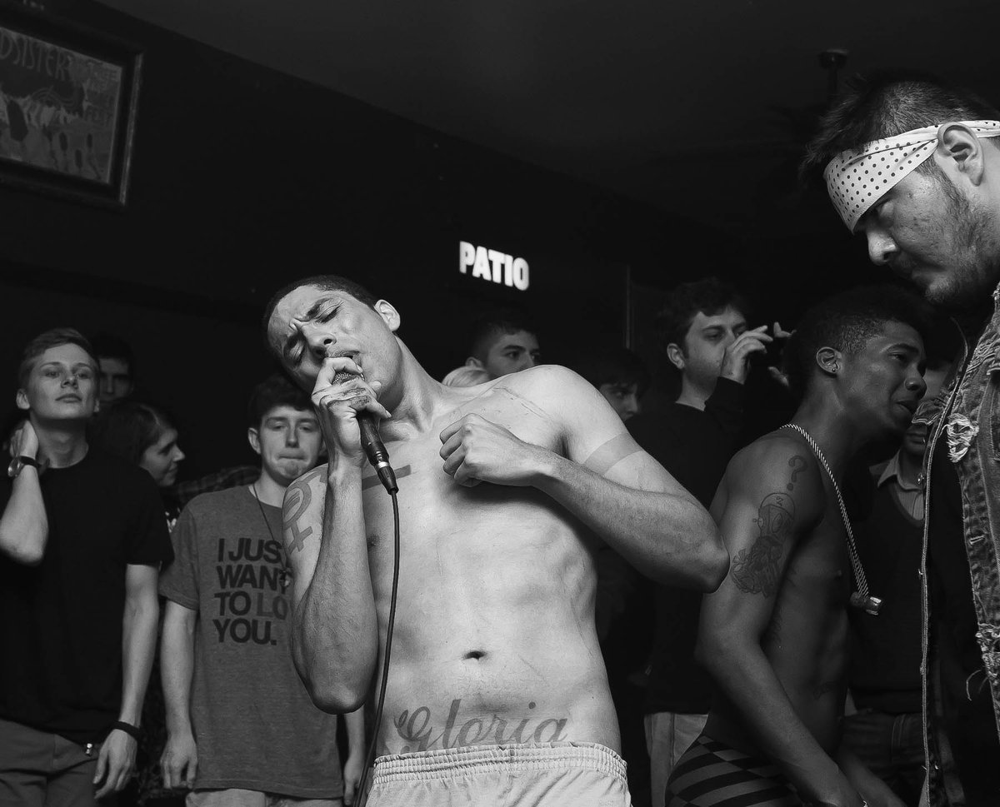
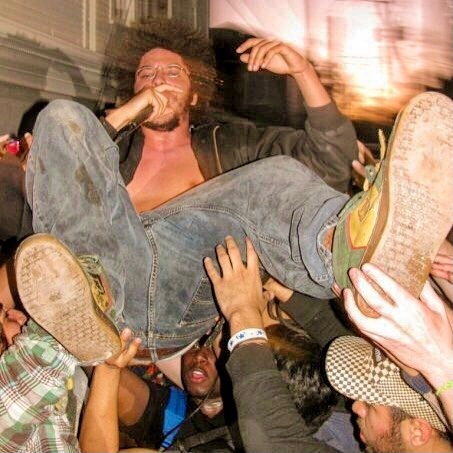
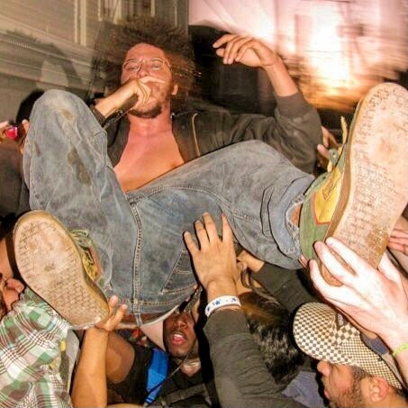

B L A C K I E
AND MATTHEW RAMIREZ
B L A C K I E... All Caps, With Spaces is the most inspiring musician I ever befriended. The noise artist born Michael Jordan LaCour, is from LaPorte, Texas. He's been on my radar since 2007; we performed on the same bill at an art show in a warehouse. The warehouse was Houston artist Robert Hodge's gallery, and Chanelle Frazier set up the show. From the moment I saw B L A C K I E climb a stack of speakers he brought just for his set and rap/shout his lungs out in the dimly lit space, I fell in love. His beats boomed like Three 6 Mafia but much more menacing. When I bought his CD and read the lyric sheet, it revealed an artist as undoubtedly concerned with Weltschmerz as they were with their feelings. In my mind, his sound is equally indebted to Southern rap music, noise, and the kind of emo/hardcore music that's more Rites of Spring than Fall Out Boy. From that day forward, we became friends, collaborating from time to time, discussing the punk and rap songs we love, and dreaming about where our music can go next.
In Michael's household, the word “blackie” was defamatory, a somewhat toned-down replacement for the n-word, but he only heard it used amongst family members. After being called “blackie” in a purposely derogatory way outside of the home, he found the true meaning. In early 2020, he began to perform under his real name, but it didn't stick. He admittedly felt on the fence about a name change and didn't correct promoters when they still listed him as "B L A C K I E." He told me, "the same force that inspired me to change my name was the same force that inspired me to stack speakers up. When you get an idea like that, you don't even question it. Something else must've implanted that thought in me, so I'm going to go with it. It's the same as writing music." When divinity speaks, Mr. LaCour listens.
I opened for B L A C K I E in 2011 on my first tour as he promoted his album, True Spirit and Not Giving a Fuck. That album title perfectly sums up who he is; an artist with earnestness in every segment of his music. Here are his thoughts on each record in his catalog.
This conversation took place throughout 2021 over phone calls and text messages.
Fat Tony: Were you born and raised in LaPorte? How did you start playing
music?
B L A C K I E: Yeah, I always pretty much lived in La Porte. I lived in
Denton and Austin when I was older but still a teenager. The rest of my
family is in Louisiana. I got a trumpet in 6th grade, but I switched
over to saxophone.
FT: Were you playing in the school marching band?
B: Yeah, pretty much working in that direction. The marching band starts
in 9th grade here.
FT: Were you making music outside of school?
B: Yeah, I was. I was experimenting with tape decks. I was super into
hip hop. I was trying to make beats, but I had no clue what any of the
equipment I needed was or how any of it was being created. I
accidentally sort of received a bass guitar for Christmas. I think all
of that was happening from 7th-8th grade.
FT: How was the bass gift an accident?
B: This older kid at the cafeteria lunch line was asking everyone what
they wanted for Christmas. The boy next to me said he asked his dad for
a bass guitar. I was always quiet. I just repeated what the kid next to
me said. I didn't even mean it. I never thought about it before that
day.
FT: Your subconscious knew you needed another instrument
B: Haha
FT: Many say they're writing their debut record their whole life until
it comes out. Was this EP comprised of songs you've worked on for years?
Where were you in life when you released this EP? What was on your
mind?
Matthew Ramirez: Was the bass guitar your way into figuring out writing
and recording music? Did that inspire you for the first EP?
B: Yes and no. By that point, I had accumulated more equipment. I was
playing in a hardcore band. I had been working on a much longer
recording. I was totally obsessed with making beats. When the hardcore
band stopped, I just decided to really do my own thing. The first EP
came together quickly, but it was much different than the longer
recording I had put together. I was cutting yards that summer. I think
that super intense lawnmower noise definitely influenced the EP more
than anything. I couldn't rap in the house. I used to have to spit my
rhymes while I cut the grass.
FT: How old were you at this time?
B: 16 or 17, then.
FT: What equipment were you using at this point?
B: A little microcassette recorder for vocals and beat-making software
these younger skateboarder kids burnt on a CD. I think I had started
building some larger speakers cabs and buying old guitar heads off the
internet.
FT: Were you performing live at this point too?
B: Just in the hardcore band. I tried rapping live once, but I didn't
really have the nerves yet to really do it.
MR: How did you learn how to build speaker cabs and stuff? Did that
inspire you to bring your own PAs to your shows?
B: My dad had shown me how to do it. He was in a band in Louisiana in
the 60s. They would build their own PA systems. Yeah, I was coming from
hearing a hardcore band practice in a garage, and I just really needed
that level of sound behind me. I liked that feeling of your ears ringing
nonstop and your whole body is being tired and sore.
FT: What happened between the EP in 2005 and your next release,
Wilderness of North America, in 2008? That album was my introduction to
your music. What was on your mind while making the next album?
B: Many things had changed. My dad died. I left college. I wasn't a
teenager anymore, and there weren't any more bands to be in at that
time. I had continuously been stacking away beats. I had to stop naming
them and start numbering them inside of alphabetical folders, but even
that started piling up. I met this band Cop Warmth and tried to join
them on bass. I showed them what I was doing with the beats. They
flipped out. They really pushed me to finish the record.
 

MR: Did something change in you that made you more confident in rapping
live? Was it related to your love for putting together your own gear and
being inspired that way?
B: Yeah, I think by 2008, I had a crazy amp wall. Also, just the
sequence of life events really opened my mind. My thought process was
like, "there's no going back. Cop Warmth were wild as hell too. A lot of
those shows in those years were with Cop Warmth.
MR: I remember seeing them at the first FPSF in 09, and that show was
wild as hell. What was the inspiration behind Spred Luv? I feel
like at that point, you had established yourself in the city's live
scene.
B: Yeah, I think things overall here had increased. I had been on tour
twice in 2009. The 1816 Calumet St. house was going on. I had more
hardware at this point now too. I just plugged my MPC into a tape
machine in the Calumet house and started rapping harder. Tonally
Spred Luv is my favorite. I was using these high-quality
cassettes, which, combined with the tape machine, gave it this crazy
sound.
MR: Onto True Spirit and Not Giving a Fuck, which you're
reissuing soon. What about that record made you want to revisit it
now?
B: I always liked the production work on True Spirit. It was
the last set of beats I made on that MPC before it broke. I have better
gear now, so I think I can remaster it for the reissue. I never put it
on wax either, so I think that would be dope.
MR: How do you remaster that record? Did that MPC breaking lead to
GEN?
B: True Spirit was all digital files, and I just found the
original hard drive it was backed up on. So, I think I can salvage any
weird issues with software. Yeah, that MPC being out of commission led
to a natural progression of just grabbing anything and flipping it into
a weird song.
FT: Can you tell us a bit about the 1816 Calumet house in Houston? What
was it?